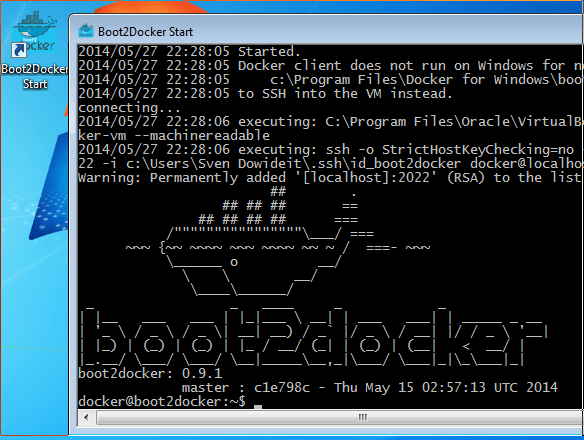

Docker
Docker overview - Part 1
Agenda
- ¿Qué es Docker?
- Instalación
- Docker run
- Docker volumes
- Dockerfile
- Demo
- Kitematic
¿Qué es Docker?
Plataforma de código abierto para crear, empaquetar y distribuir aplicaciones
Creación de máquinas virtuales muy ligeras (Containers)

VM's vs. Containers
La guerra de la virtualización

¿Cómo funciona?
Un container ejecuta una acción y desaparece al terminar ésta
Se controlan los recursos del host a través de "CGroups"
Lanzamos imágenes ya creadas o podemos crear nuestras propias imágenes
Instalación
Se puede instalar en GNU / Linux, Mac OS X y Windows (*)
:: GNU/Linux ::
A través del gestor de paquetes de la distribución
o a través del siguiente script:
wget -qO- https://get.docker.com/ | sh * Ejemplo: Centos
:: Mac OS X || Windows ::
Se instala una máquina virtual con docker en ella, al estilo phansible que os presenté en el anterior meetup.
Aplicación para la gestión de máquinas virtuales
En nuestro caso será el "provider" por defecto
Vagrant
Software para la creación y configuración de entornos virtuales de desarrollo
Puede comunicarse con varios "providers" y diferentes CM (Configuration Management)

Configuration Management para automatizar la configuración de máquinas virtuales
Para que funcione en Windows hay que tirar de cygwin
¿Y ahora?
Tan sencillo como configurar y levantar
Visita -> http://phansible.com/
$ vagrant up
$ vagrant ssh
Visita -> http://ip_vm_configurada/¿Todavía no?
Demo aka. "al turrón"


¿Dudas?
Existen alternativas
Puphpet -> Similar pero utiliza puppet como CM
https://puphpet.com/